聖王遺物と魔王遺物
聖王遺物と魔王遺物
聖王と魔王は現在の世界にそれぞれ遺物を残しています。ゲーム中で出てくる遺物は聖王遺物が11個、魔王遺物が3個の合計14個。
以下の画像はオープニングで出てくる聖王・魔王ゆかりの品々。なぜか妖精の弓がありません。
※マスカレイドと氷の剣と七星剣が合ってるのか不明。
ピドナの詩人の古い歌を聞くと聖王・魔王ゆかりの品々を列挙します。こちらはなぜか聖杯がありません。
整理すると以下の表のようになります。
入手場所が神王の塔となっているものはマクシムスの手に渡っているものです。マクシムスは世界征服を目論んでいるため、聖王遺物（魔王遺物も）を集めています。

銀の手
銀の手については先にクレメンスとルートヴィッヒの関係について知っておいた方がより理解が深まるので、もし興味があればルートヴィッヒとマクシムスの頁も見てみてください。
銀の手はミューズの夢の中にあります。ミューズの夢イベントをクリアするとわかるのですが、マクシムスが子供をだまして、夢魔の秘薬をミューズに飲ませたということがわかります。
マクシムスは聖王遺物に興味を持ち、集めています。ミューズの夢の世界の中に隠された銀の手を狙ってこのようなことをしたのでしょう。
ミューズの夢の中のイベントでは、最後にクレメンス（ミューズの父親であり、かつてシャールが仕えていた人物）が登場します。当然これは夢魔が見せた幻影。

ミューズはこの幻影に打ち勝つことで夢の世界から解放されます。
このイベントを経て聖王遺物の一つである銀の手を手に入れることができます。銀の手は消えない！
ミューズの夢の中でメニューを開くとわかるのですが、夢の舞台はピドナ王宮。
ピドナを入ってまっすぐ行くと門衛が居て入れない場所がありますが、そこですね。
聖王の槍
聖王の槍はメッサーナの乱のどさくさに紛れて何者かに盗まれました。メッサーナの乱について知っておいた方がより理解が深まるので、もし興味があれば先にメッサーナの乱の頁を見てみてください。
聖王の槍はアラケスの魔槍をピドナ工房の初代の親方が聖王と共に鍛え直して作り上げたもの。しかしその槍は盗まれてしまう。手掛かりは赤サンゴのピアスとジャッカルという言葉。
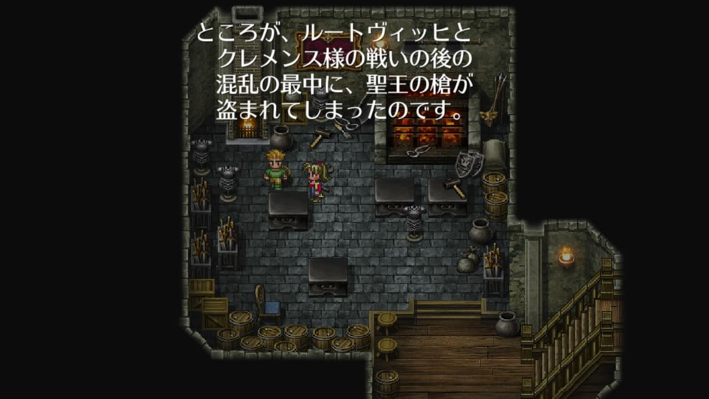

 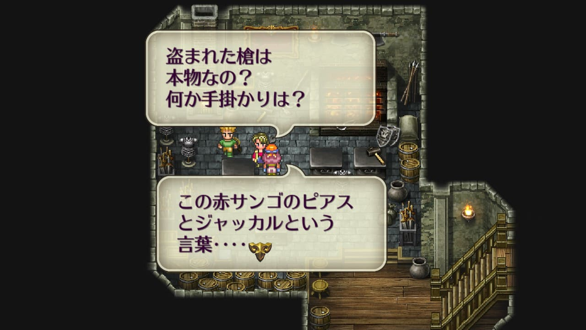
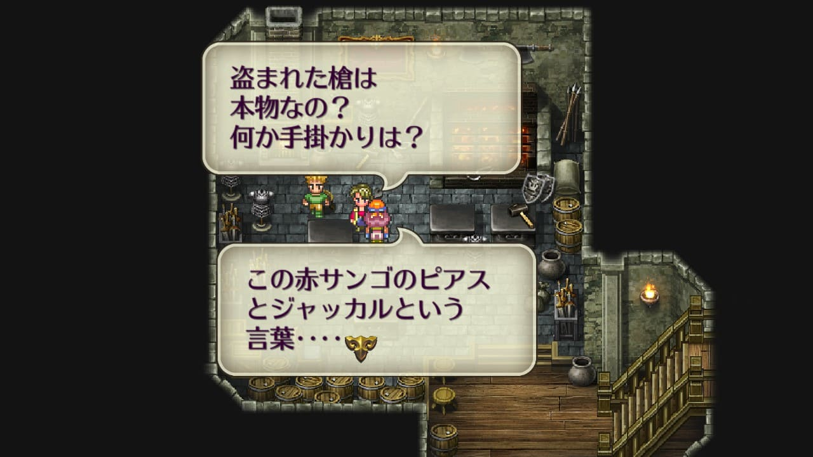
ブラックかハーマンが仲間にいる状態で神王教団のピドナ支部に行くと、ピドナ教長のマクシムスが演説をしようとしている。
ブラック（ハーマン）によって、マクシムスの正体がジャッカルであることを暴く。聖王の槍を盗んだのはマクシムスだということがわかる。
神王の塔でマクシムスを倒すと聖王の槍が手に入る
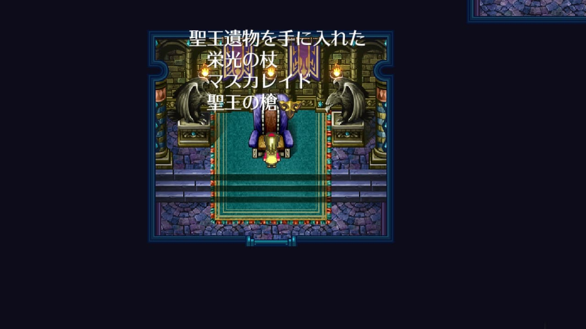
王家の指輪
王家の指輪はランスの聖王家の当主が受け継いでいる。魔王殿のアラケスの領域を封印している指輪。
ランスの聖王家。魔王殿で「指輪を・・・・」のメッセージを確認した後に訪れると、現当主から王家の指輪を受け取ることができる。
マスカレイド
オープニングイベントの最後に、カタリナが何者かにマスカレイドを奪われる。
 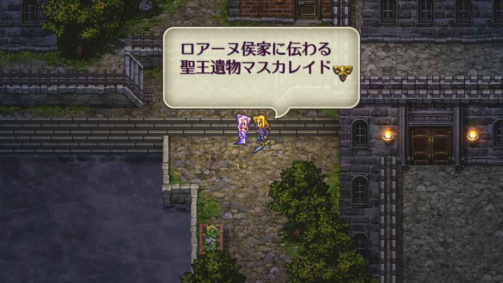
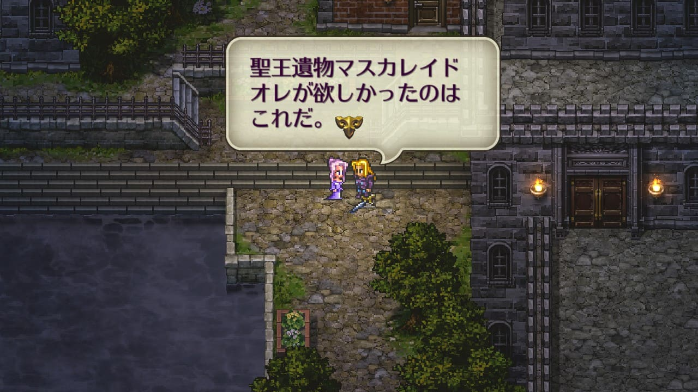
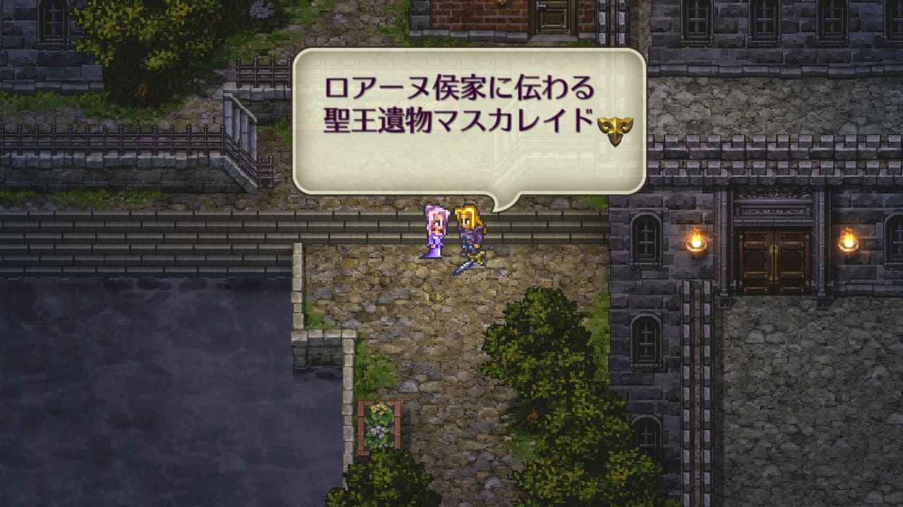
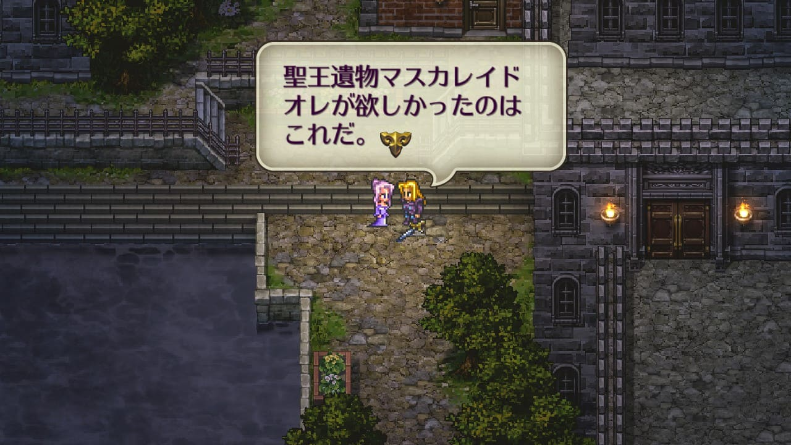

マクシムスを倒すとマスカレイドが手に入る。マスカレイドを奪ったのはマクシムスの部下か何かだったんでしょう。
マスカレイドを奪われるこの事件は、ゴドウィンが起こしたクーデターの直後に発生しています。
ゴドウィンはモンスターと手を組んでクーデターを引き起こしました。明言されてはいないですが、このクーデターは裏でマクシムスが糸を引いていたんだろうと思っています。
聖王の槍はルートヴィッヒとクレメンスの戦いの際に何者かによって盗まれ、結局マクシムスの手に渡っています。マスカレイドも同じように混乱に乗じるような形で奪われており、手口が似ています。
また、クーデターの黒幕はモンスターと手を組んでいました。
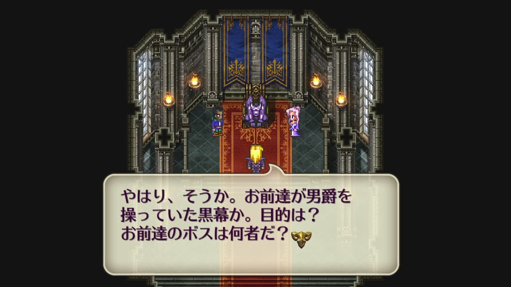
マクシムスも神王の塔でモンスターと手を組んでいましたよね。
これらのことを考えると、マクシムスがゴドウィンをそそのかしてクーデターを起こさせ、その裏でマスカレイドを奪うという計画だったのではないかと個人的には思っています。
聖杯
聖杯はレオニードが所有している。聖杯は聖王の血を注いだものだとされている。
ポドールイ城地下最奥地でレオニードから聖杯を譲り受ける。
ツヴァイクトーナメントで優勝するとわかるのですが、ツヴァイク公は、レオニードが聖杯を所持していることが気に食わない様子。
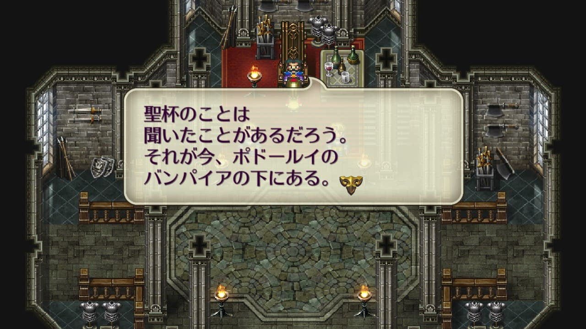
氷の剣
氷の剣は雪の町の奥の氷銀河の最奥にある。氷銀河で長い年月をかけて産み出される剣で、どんな炎でも溶かすことはできない。
竜槍スマウグ狙いでここに来る人も多いと思うが、スマウグは聖王遺物ではないので今回は割愛。
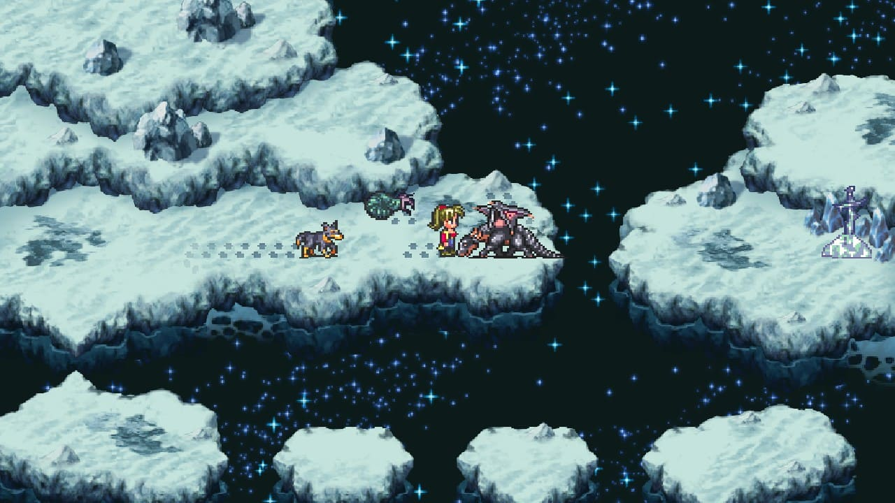
ドラゴンルーラーの後ろにあるのが氷の剣。
栄光の杖
栄光の杖はマクシムスが所持している。神王の塔でマクシムスを倒すことで手に入れることができる。
SFC版ではなぜかクリプトエルダーが所持しており、ドロップ若しくは無刀取りで手に入れることができる（リマスターではルーンの杖に変更されている）。
魔王の盾
モウゼスの町の真ん中にある井戸に魔王の盾があり、ウンディーネとボルカノはそれを狙っている。
四貴族の時代（四魔貴族の時代のことだと思われる）には、病人や年寄りは生きたまま死者の井戸に投げ込まれていた。
井戸の中には魔王の盾がある。デスマスターを倒すと手に入れることができる。
魔王の鎧
東方にある。ゼルナム族と呼ばれるアビスの魔物を引き寄せる原因となっているもの。
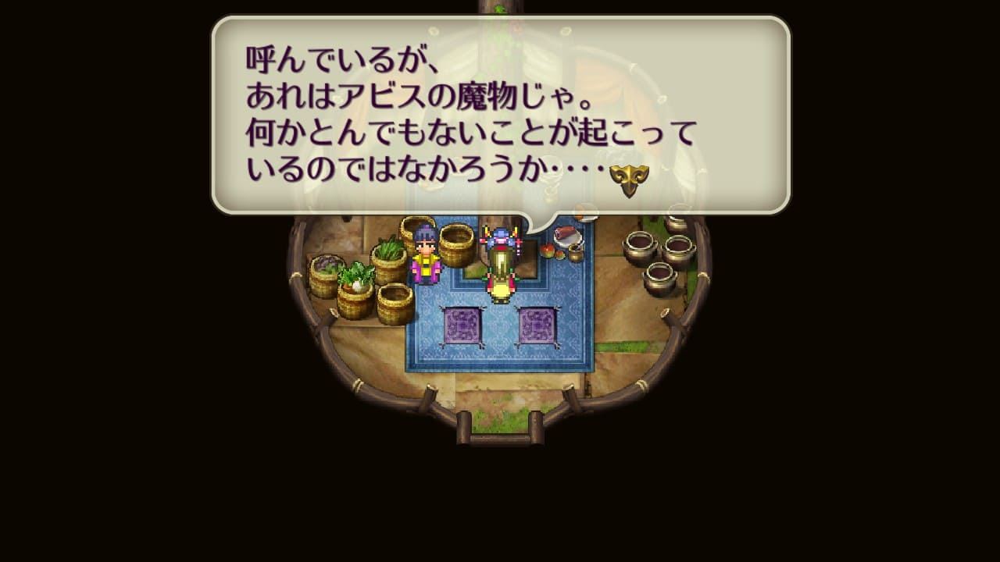
バイメインニャンとムング族と協力して、草原の北に何かがあることを突き止め、魔王の鎧を手に入れる。
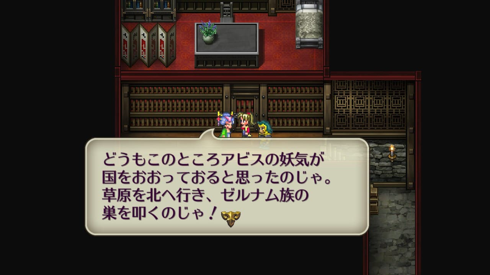
聖王のかぶと
聖王のかぶとはランスの聖王廟内の『王者の試練』で手に入るアイテム。
聖王の時代は、聖王十二将の一人ソープが所有していた。
ソープは元々臆病な男だったが、聖王のかぶとを授けられて以来、見違えて勇敢な戦士になった。
妖精の弓
妖精の弓はランスの聖王廟内の『狩人の試練』で手に入る弓。
聖王ブーツ
聖王ブーツはランスの聖王廟内の『つらいテスト』で手に入るアイテム
神王の塔（栄光の杖、マスカレイド、聖王の槍、七星剣、魔王の斧）
栄光の杖、マスカレイド、聖王の槍、七星剣、魔王の斧は既にマクシムスの手に渡っているため、神王の塔のマクシムスを倒すことで手に入れることができる。
参考